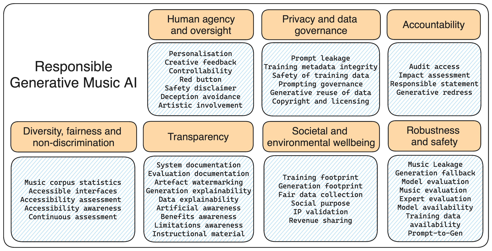

Responsible AI Music
Ensuring the Future of Music Creation aligns with Trustworthy AI Principles
Generative AI is radically changing the creative arts, transforming the way we create and interact with cultural artefacts.
While offering unprecedented opportunities for artistic expression, this technology also raises ethical, societal, and legal concerns. Key among these are the potential displacement of human creativity, copyright infringement stemming from vast training datasets, and the lack of transparency, explainability, and fairness mechanisms. In response to this, a coalition of organisations representing creative industries formed the Human Artistry Campaign, advocating on behalf of the responsible use of creative AI. As generative systems become pervasive in this domain, responsible design is crucial.
Responsible AI Music (RAIM) is a collaborative initiative bringing together musicians, AI experts, ethicists, and legal experts to define, expand, and monitor requirements for generative music AI. Our goal is to work towards a framework providing guidance on the responsible development and use of generative models and system for music. By balancing innovation with ethical considerations, we advocate for a tradeoff where artists and AI development collaborate in a way that safeguards, inspires, and augments human creativity and artistry.
Can this be done by leveraging a Trustworthy AI framework? This initiative takes a holistic approach, harmonising previous work that has tackled specific aspects of generative systems (e.g., transparency, evaluation, data), within the Ethics Guidelines for Trustworthy AI produced by the European Commission - a framework for designing responsible AI systems across 7 macro requirements. Focusing on generative music AI, we illustrate how these requirements can be contextualised for the field, addressing trustworthiness across multiple dimensions and integrating insights from the existing literature.
What is Trustworthy AI?
Trustworthy AI encompasses artificial intelligence systems designed and implemented to adhere to fundamental ethical principles, technical robustness, and legal compliance. A referential work in this domain are the Ethics Guidelines for Trustworthy Artificial Intelligence, a document prepared by the High-Level Expert Group on Artificial Intelligence, an independent expert group appointed by the European Commission in 2018.
The guidelines include 7 key requirements that AI systems should meet to be trustworthy:
- Human agency and oversight
- Robustness and safety
- Privacy and data governance
- Transparency
- Diversity, non-discrimination, fairness
- Societal and environmental wellbeing
- Accountability
Guiding features for Responsible AI Music
We contextualise the Trustworthy AI framework to the domain of Generative AI Music, by defining responsible features that can drive the design and the evaluation of generative systems, in accordance with the literature.
Before presenting each feature, let's start by introducing some jargon. When referring to Music AIs, a distinction needs to be made between music model and generative music system.
- A music model can be defined as an algorithmic procedure that either encodes a set of rules explicitly, or learns them from the data and the task it is provided. These rules, e.g., a probability distribution for predicting the next note or chord in a piece, or a set of logical statements, can be used to generate, complete, or manipulate music.
- A generative music system encompasses the whole computational infrastructure built on top of a music model to enable users to interact with the model and make use of its outputs, without the need of its inner workings. This includes both technical and the regulatory aspects, such as the interface, the logic which abstract or hide certain parameters of the model, the way the model's predictions are consumed; but also the data management system, the legal framework regulating the exchange of data, etc.
Typically, a generative system is implemented in such a way as to conveniently wrap the functionalities of a particular model, meaning that a model can provide the computational backbone to various generative systems (e.g., plugins for music editors, production environments, smart instruments). For example, MusicVAE has been reused in different applications, such as Beat Blender, Melody Mixer, Latent Loops, and is also available through Magenta Studio, a plugin for the DAW Ableton Live. The distinction between model and system is a peculiar aspect to Generative AI, as their design and implementation involve different stakeholders, such as machine learning engineers and mathematicians for the former, and UX designers, software developers, data engineers for the latter, but also share music experts as a common denominator driving the evaluation efforts.
Discover all features below or jump to those belonging to a specific Trustworthy AI pillar.
Pillar 1: Human Agency and Oversight
Central to the design of trustworthy systems is the capacity of individuals to understand and meaningfully influence the actions of AI systems (human agency) while monitoring and interacting their behaviour to operate responsibly and align with human values and preferences (human oversight).
Personalisation
The system can reuse the musical repertoire of the user to personalise the style of the generation.
Personalisation
Personalisation allows a musician to use the system to create stylised music based on their existing repertoire, so that the music produced will fit into the musicians repertoire more easily when released. It also means that the user will be better able to influence the output of the system by personalising it based on certain songs.
For the musician using this AI, this will mean that before running the system, they are asked to (optionally) upload files containing their musical repertoire - they will also need to be able to prove that they hold copyrights to the files uploaded. Then the AI model will train to focus on the uploaded music, so that the product will be similar to the input.
Creative feedback (HITL)
The system can iteratively refine or improve the generation based on the feedback provided by the user throughout the creative process.
Creative feedback (HITL)
Creative feedback is an example of a Human In The Loop (HITL) framework. This means that a human is able to intervene in each decision taken by the AI - in this case by giving feedback on the music that the AI has produced, to improve the quality of its output and give the human more control over what is created and tailor it to their own specific music taste.
When a user runs the system, they would have the opportunity to rate the songs produced by the AI after each episode in the training cycle to help the model adapt to the tastes of the user. Training will only be able to complete once the user is satisfied with the result.
Controllability (conditioning)
To steer the generations depending on the user's preferences, the system provides a rich variety of modalities including language, melodic, harmonic, rhythmic, and emotional control of the generation.
Controllability (conditioning)
Controllability is another important way for the user to control the output of the music generation system. It allows the user to influence the music being created through text prompts, as well as providing melodies, harmonic progressions, or rhythms for the AI to incorporate into its generation.
The user would be provided with a way to input text or upload files for the system to use upon starting, which greatly increases their level of involvement with the music being created.
Red button
If the system is generating and playing/displaying music that is either unpleasant, disturbing or contains lyrics with offensive language, the user can always halt the generation process at any time.
Red button
Some music that is particularly unsettling, discordant or containing unsafe lyrics may cause distress to the user - in which case it is important for the user to have a 'red button' to halt the generation process if needs be.
During the generation of music, there would be a command available would allow the user to immediately cease generation and clear memory of the music that was produced.
Safety disclaimer
The system always advises the user whenever it can generate music that may be deemed dangerous or offensive to some categories of users (e.g. offensive language in lyrics).
Safety disclaimer
A safety disclaimer would be a useful feature to prevent users from being harmed by dangerous or offensive content produced by the AI model. It would also help to mitigate legal issues caused by this content by warning the user of the risks associated with using the AI model.
Upon starting the system, the user would be presented with a short explanation of the risks of using the system, and asked to confirm that they have read and understand this.
Deception avoidance
The system does not show any deceptive behaviour related to the copyright and ownership of the generated material. For instance, the system never tries to claim ownership or novelty of the generations when music is possibly plagiarised.
Deception avoidance
To ensure that copyright laws are being upheld, it is important that the system will not attempt to claim ownership of music that may be plagiarised, for example if the output is very similar to some part of the training data.
The system would also never attempt to claim ownership or novelty of the produced content if it cannot be sure of the origins of the data that it has been trained on.
Artist involvement
The system has been designed with the active involvement of creative professionals throughout its development cycle.
Artist involvement
Creatives are likely to be the most affected group by the rising usage of AI generated music. Therefore it will be important that the future of AI usage in music takes into account the considerations of artists, such as by including them in the design process. They will also be able to ensure that the ethical requirements are being met satisfactorily during the development of the software.
Musicians may also be able to provide a lot of useful insight to the development of a music generation system, that might otherwise be missed by a computer scientist.
Pillar 2: Robustness & Safety
This requirement focuses on accuracy, reliability and reproducibility, resilience to attack, security, and fallback plans.
Music leakage
The system does not allow for the full or partial reconstruction of the music material used as training data unless this is explicitly acknowledged and allowed by the copyright holders of the music data.
Music leakage
In AI models, it is sometimes the case that data used to train the model (in this case, music) is reproduced in the output. In order to avoid copyright issues, it may be important to ensure that this is allowed by the copyright holders of the data used.
This might involve storing data on the copyrights of all of the data used in training. The outpuit would be compared with data used in training, and if it exceeds a certain degree of similarity then the copyright is called into question and if necessary the generated music will be disposed of.
Generation fallback
If the system needs to generate music continuously over time, and the content is considered offensive at some point, the system can switch to a simpler generative strategy (e.g. a rule-based mode).
Generation fallback
With this feature, the system will be able to use a different generative strategy in the event that the content being produced is not satisfactory for the user, or even offensive. This will help to reduce the negative effects that outputs of the AI model may have on users.
The secondary strategy will be focused on avoiding offensiveness by using pre-written rules to generate music free of any unsafe content, however it may not produce music to the same standard as the primary strategy.
Model evaluation
The evaluation of the model/system is consistent with other frameworks and benchmarks for music generation.
Model evaluation
Music generation is a difficult thing to evaluate due to the subjective nature of music. Investigation could be done into widely used evaluative methods used by other music generation models in order to compare our system with others that are similar.
This might involve using both objective and subjective methods (such as asking the user to rate the output of the model), so that it can be verified as a robust music generation system.
Model evaluation
The system/model provides a comprehensive evaluation of the musical properties of its generations.
Model evaluation
it may be important for the user to understand the musical properties of the content that is generated by the AI model, as they may wish to know certain facts - for example, the key that the music is in.
After the music has finished generating, the system would produce a series of statistics about the content. These might include the key signature, chords used, and the tempo.
Expert evaluation
The evaluation of the system/model involves creative professionals or music experts.
Expert evaluation
Similarly to the idea of artist involvement, an evaluation by creative professionals could be useful to ensure that the system meets ethical requirements, as well as being up to a good musical standard.
A panel of music creatives could be used in an evaluation to give feedback on the ethical components of the project, as well as the musical plausibility of outputs.
Model availability
The computational model behind the system is fully publicly available and includes pre-trained checkpoints.
Model availability
Releasing the model publicly would improve the transparency of the system, helping people understand the inner workings of the AI system and improving its standing as a 'trustworthy' AI amongst the public, as they can see for themselves how it produces content.
Training data availability
The training material on which the system relies is fully publicly accessible.
Training data availability
Releasing the training data for the system would also increase the transparency of the system, as it might be important for users to understand the source material that the software draws on.
Prompt-to-Gen
If sample generations are released, the model can be seeded and prompted to recreate the same musical content.
Prompt-to-Gen
It might be helpful for there to be a direct one-to-one relationship between the prompts that the user enters (and training data the model is seeded with) and the outputs given by the system, as this will improve the transparency and reproducibility of the system.
It also places more of the creative work in the hands of the user, which will help to keep the 'human spirit' of generated music intact.
Prompt leakage
The system neither distributes nor leaks any personal data used by users to prompt the generation of music.
Prompt leakage
Although it is inadvisable for users to enter any personal information in a prompt for an AI system, it is still a strong possibility. As such, it is important for the system to avoid data entered into the prompt being leaked.
This is likely to be done by deleting the prompts entered by the user as soon as possible, so that there is no possibility of it being distributed. Prompts and/or generations may have to be screened for sensitive data, to avoid it being leaked in the output of the system.
Pillar 3: Privacy and Data Governance
Central to the goal of preventing unintended harm and achieving trust with users, data governance must encompass the quality and integrity of the data utilises, its pertinence within the intended domain of AI deployment, strict access protocols, and mechanisms to safeguard privacy.
Training metadata integrity
The model advises if it is not trained on music data which is fully and correctly attributed to the right authors.
Training metadata integrity
If the system generates music that has been trained on misattributed data, it may violate copyright. It is important to avoid this, so it may be useful to store copyright information on training material used to train the model, so that the user can be advised of any potential issues they may face.
The user would get a warning before using the system if there is a chance of misattribution in the training data, in order to prepare them for the possibility of a copyright violation.
Safety of training data
The model advises if it is trained on music data that can be deemed offensive or socially harmful (e.g. lyrics).
Safety of training data
If there is any training data which can be deemed to be offensive then it may lead to offensive outputs that cause distress to the user - so it might be helpful to pre-warn the user if any potentially harmful content is present in the training data.
Before the generation process starts, the system could check the training data for offensive content. If any is found, it would then provide a warning to the user so that they are aware of the risk.
Prompt governance
If the system stores data collected from users through the generation process (e.g., prompts, feedback, music), access to it is fully regulated.
Prompt governance
In the event that data collected from user is stored for future use (for example, for evaluations), access to this data would need to be properly regulated by implementing protocols to specify who can access the data, and under what conditions.
This can cause privacy issues when the data includes personal information that the user may have entered.
Generative reuse of music data
The model uses music material (e.g. scores, audio recordings, lyrics, MIDI recordings and transcriptions) whose licensing and terms of use explicitly allow for training systems.
Generative reuse of music data
As music generation relies on human created music as training data, it is important to recognise the rights creatives have to their music, and many creatives may not appreciate having their music used to train generative AI for music.
To avoid clashing with musicians the system could be trained only on music that explicitly allows for it to be used as training material. This may significantly reduce the volume training material available, however it may be more ethical and considerate towards musicians.
Copyright and licensing of generations
The system provides guidance or clear and comprehensive information about the copyright and licensing that apply to the generations.
Copyright and licensing of generations
It is important for users to understand the legal standing of using the content produced by the music generation system, so that they can avoid facing legal issues if they misuse content that they have generated.
For example, some generative AI systems hold copyrights of content that has been generated by them - if this is the case, it must be made clear to the user.
Pillar 4: Transparency
This requirement is closely linked with the principle of explainability and encompasses transparency of elements relevant to generative systems, e.g., the data, the system, and the business model. Hereafter, we outline the main elements influencing the transparency of these systems.
System documentation
The system's design is well-documented throughout its development cycle, including instructions for model implementation, training, and data generation.
System documentation
It is important for the transparency of any system that it is properly documented over the course of its development, as it promotes honesty and gives a clear view of the direction a project takes as it is being developed.
The documentation should follow established guidelines, such as including a datasheet for every dataset to provide information on sources and other characteristics.
Evaluation documentation
The evaluation of the model/system is well-documented and reproducible, promoting consistency and transparency in future evaluations (e.g., of other music models).
Evaluation documentation
It is important for the transparency of any system that it is properly documented during its evaluation, to promote honesty and show that proper measures have been taken to ensure that it is thorough and unbiased.
These measures include things such as the performance of the model, use cases, and potential biases, which are important to show with good documentation.
Artefact watermarking
The system automatically embeds a watermark into every generation to remark on their artificial nature.
Artefact watermarking
Watermarking items as being produced using an AI can be useful to distinguish it from human compositions, and protect against the system being used for deepfakes - or to violate copyright.
There are already existing solutions for watermarking AI generated content such Meta's AudioSeal. Once the the AI model has created a piece of music, a watermark is added that is imperceptible to the human ear but can be picked up using specialised software.
Generation explainability
The system can explain how the generations are created in a way that is understandable to its target users.
Generation explainability
Most users of music generation software are likely to be musicians or music listeners. Both of these groups are unlikely to be experts on generative AI, however it helps with transparency if the users can understand the inner workings of software that they are using - at least to some degree.
One way that this can be achieved is by using the concept of harmonic memory, which generates chord sequences based on user prompts, which is easier to explain for a musician.
Data explainability
The system can relate each generation to the training material that contributed to its creation process (e.g. a pattern, motive, or sample).
Data explainability
It may be useful to be able to match training material to specific generations, so that users can understand how each part of their generation has been put together.
This may help to promote confidence in the system, and make it seem more approachable since users can piece together the generation process relatively easily.
Artificial awareness
Users interacting with the system during the generation process are always aware of its artificial nature.
Artificial awareness
Some users may not understand the core concepts of AI, and be under a false impression of how the music is created. It is important to ensure that users always understand that they are interacting with a system rather than a human, and that the generated content is being created by an AI.
Before the user begins to use the system, they would be presented with an information screen explaining the nature of the music generation system, which they must confirm they understand before using the system.
Benefits
The benefits of using the particular system, compared to other solutions, are communicated to users prior to its use.
Benefits
It would be useful to inform users of the technical and ethical benefits of this system, to promote informed use not only of our systems, but also of others.
An information screen could be shown to the user before they use the system, with facts and statistics educating the user on the benefits of the system.
Limitations
The technical limitations and the potential risks of the system are communicated to users prior to its use.
Limitations
It would be useful to inform users of the technical and ethical limitations of this system, to promote informed use not only of our system, but also of others.
An information screen could be shown to the user before they use the system, with facts and statistics warning the user of limitations of the system.
Instructional material
Appropriate instructional material and disclaimers are provided to users on how to adequately use the system.
Instructional material
Providing instructional material could be very helpful to users, especially in the case that the user is inexperienced using computers and software. It could also provide disclaimers to promote effective interaction with the generative system.
An information screen could be shown to users before they use the system, with disclaimers on various functions of the system, as well as instructions on usage of the system. Alternatively a tutorial could be shown to users as they start the system showing them through the controls.
Pillar 5: Diversity, Fairness, and Non-Discrimination
This requirement emphasises the need to promote diversity, non-discrimination, and fairness in generative systems by establishing mechanisms to avoid unfair bias, designing for accessibility, and ensuring fair treatment for all users.
Music corpus statistics
The system provides a quantification of the kind of music used for training (genre, style, period, etc.), with statistics on the training corpora.
Music corpus statistics
Users may wish to know some statistics such as the genre and period of music that has been used for training, as this data could give insight into any potential biases that may be held by the AI model.
Before using the AI system, users would be able to look at the training data statistics to understand what kind of music the AI model is likely to produce.
Accessible interfaces
The system provides generative interfaces and/or prompting modalities to make it more accessible and inclusive to users.
Accessible interfaces
To ensure accessibility for all users, some features could be included in the interface to facilitate easier use.
These might include different languages for international users, different options for how to download and upload content, and different formats for the interface to be displayed in. Another technology that could be used is gaze tracking, which could help people with severe motor disabilities interact with the system.
Accessibility assessment
If the system provides accessible features, these have been evaluated and tested with the specific target of users they are intended for.
Accessibility assessment
To ensure that the system is accessible for all an assessment could be done, which would evaluate its accessibility and suggest ways that it could be improved.
The assessment could involve people attempting to use the system using different operating systems, speaking different languages, and with different impairments, before commenting on their experience and giving recommendations of how to improve it.
Accessibility awareness
The system explicitly acknowledges whether its use is limited, or not suitable, to certain categories of users.
Accessibility awareness
If certain users are likely to experience difficulty while using the system, it may be important to acknowledge this in order to keep users informed and avoid them having a negative experience.
For example, it may be difficult to accommodate visually impaired people - in which case a warning could appear at the start which warns them that they may need to use their own accessibility tools to fully access the system.
Continuous assessment
The system includes music stakeholders (creative professionals, ethical experts, AI engineers and researchers) as part of a long-term strategy for the continuous assessment of its outputs, impact, and trustworthiness.
Continuous assessment
It may be difficult to determine the long term effects of AI usage in music, and what effect an AI system may have on the music industry. To this end, stakeholders, including musicians, ethicists, and AI experts, could continue to assess the impact of the system after its deployment.
At regular intervals after the deployment of the system, a study could be done to assess the impacts of the AI music system and identify any changes that need to be done to improve its trustworthiness.
Pillar 6: Societal and Environmental Wellbeing
This requirement focuses on accuracy, reliability and reproducibility, resilience to attack, security, and fallback plans.
Training footprint
The system provides an indication of the resources consumed for training the model, in terms of hardware, time, and energy consumption (cost of training).
Training footprint
By disclosing a "training footprint" for the user, the system can take account for its cost and environmental impact. This helps to inform users of the impact of the AI model, so that they can effectively make their own choices around environmental AI usage.
There could be an information screen detailing key information, such as the hardware used to train the model, the time it took, and the amount of energy that was consumed.
Generation footprint
The system provides any indication of the environmental footprint created after generating a whole song or a part of it (cost of inference).
Generation footprint
After a model has been trained, it still uses up resources to generate content. A responsible music generation system should provide some kind of indication of the hardware, time and energy consumed to generate content, to inform users of the environmental cost of their usage of AI.
After a user has generated an item of media, the system could calculate the cost that this action has incurred and provide the user with this information.
Responsible data collection
If the model uses any human-made annotation (for training, or evaluation), data collection or crowdsourcing was conducted and documented ethically, fairly, and with adequate compensation for annotators.
Responsible data collection
The training data required for an AI - especially a responsible one - may require annotation, which must be done by a human. Similarly it is highly possible that crowdsourcing may be used to collect data, and humans may be used for data collection and evaluation. In these circumstances, it is important that the human actors are being treated fairly and ethically, and annotators may be compensated for their work.
Social purpose
The system has been designed and used to bring societal benefits, e.g. supporting teaching activities, wellbeing applications, or improving accessibility of creative technologies.
Social purpose
Music AI has significant potential to bring societal benefits, and can be used for example in education to help with the understanding of music theory, or to improve the mental state of a listener by reducing stress. Music AI could also improve the accessibility of creative technologies, allowing them to create music in novel ways.
An AI system could be designed with these goals in mind in order to maximise its 'responsibility', and avoid some of the negative impacts of AI on the music industry.
IP validation
The system has mechanisms in place to detect possible cases of plagiarism or IP infringement resulting from the generations.
IP validation
For an AI system to be societally responsible, it is important that it can determine how much it copies from the data that it is trained on.
There already exist some solutions to this - for example, there is the 'originality report' which is a framework for measuring the extent to which a music AI copies its training data. This could be used to help detect plagiarism and IP infringement in the generations produced by the AI model.
Revenue sharing
If the system is a paid service, revenues from the generations are also shared with the artists who contributed training data.
Revenue sharing
Remuneration for artists and creatives who create music that is used in AI music systems is vital to enable them to continue their socially valuable work and invest time and effort in their literary and artistic creations.
If the AI system is paid-for, a percentage of its profits could go towards the artists who have contributed training material. This would also be able to raise funds to to assist authors who whose work has been disrupted by generative AI.
Pillar 7: Accountability
This requirement corroborates all the others by ensuring that AI systems are accountable for their responsible design, implementation, and impact throughout their lifecycle.
Audit access
If proprietary, access to the model behind the system and training material can be granted to internal and/or external auditors (on request) and their evaluation reports can be made available.
Audit access
A proprietary generative system should ensure auditability, allowing internal and external auditors access upon request to assess its compliance with the previously defined responsible features. These audit reports should be publicly available.
Impact assessment
Prior to the deployment of the system, potential negative impacts have been identified, assessed, minimised and openly communicated.
Impact assessment
It is important for the responsibility of a system that potential negative impacts of the system have been investigated. These should also be assessed, minimised and communicated openly while conducting risk assessments with the involved stakeholders and protecting those who may raise concerns.
This particularly applies when the generative system cannot accommodate one or more responsible features, and can be facilitated with 'red-teaming' (similar to a penetration test in cybersecurity) or with questionnaires.
Responsible statement
The inability of a system to provide responsible features (like those outlined before), in full or in part, is explicitly motivated and documented. Trade-offs should be carefully selected to prioritise the minimisation of risks to ethical principles.
Responsible statement
Some of the features listed here may not be possible to include in a generative system, or may require some kind of trade-off. For example, a system designed for highly realistic music generation may lack explainability and have high computational costs.
Trade-offs should be carefully selected to prioritise the minimisation of risks to ethical principles. If no ethical trade-off is found the development or use of the model should be reconsidered.
Generative redress
When unjust adverse impact occurs (e.g. generations contain offensive content, or the music is plagiarised), the system explicitly accounts for redress (e.g. compensation, direct correction through feedback).
Generative redress
Generative system should provide redress mechanisms when it fails to meet responsible expectations and unjust adverse impact occurs, for examples containing offensive content or plagiarising the training material.
This could involve compensation, direct correction through feedback, legal support, and other ways for users, artists and other stakeholders to hold the system accountable.
Call for action
How to get involved
We actively seek insights and views from AI researchers, ethicists, legal experts, and music professionals to ensure continuous refinement and responsible expansion of generative AI technologies in the music industry. We warmly welcome policymakers, music industry stakeholders, and civil society organizations to join us in this crucial dialogue. Your voice is invaluable in shaping the ongoing discourse surrounding the broader implications of generative AI for all creative industries. There are different avenues to contribute to the initiative. Here are some suggestions:
Contribute to the RAIM framework & join our study
We are building a network of experts who can provide advice and support on responsible AI music. This could involve participating in online forums, or attending our events. Share your insights and experiences, and help inform the next generation of AI Music systems. We are soon launching a study to assess the importance of each feature relative to each stakeholder group, leading to the definition of the framework. To register your interest in participating, please click the button below to send us an email. We will contact you with further details once the study commences and all protocols are in place.
Register Your InterestReach out and collaborate with us
If you are interested in working with us, please get in touch! We are actively seeking collaborations to drive the implementation of the RAIM framework. Join us in promoting the next generation of AI music systems that prioritise ethical considerations and adhere to responsible features. Let's work together to establish benchmarks, develop databases and tools, and explore innovative solutions for RAIM.
Reach OutShare the initiative
Help us spread the word about the RAIM Initiative. Become an advocate and raise awareness about the potential of generative AI in music and the importance of responsible innovation. Share our website and social media channels with your network, or writing about us in your publications.
Together, we aim to foster a vibrant and inclusive ecosystem where generative AI truly empowers musicians and enriches the musical landscape for everyone.